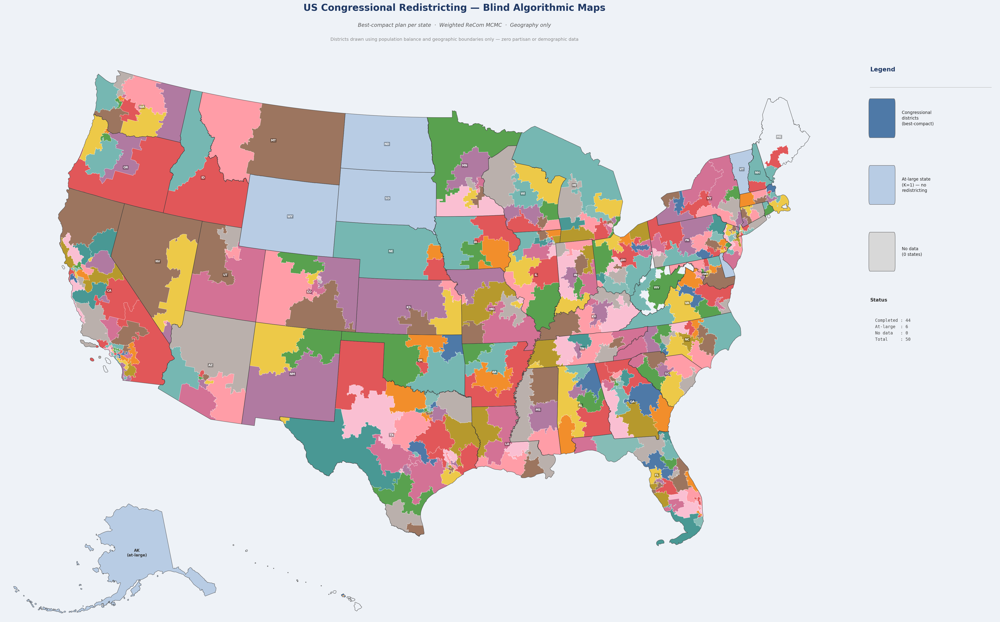

State Maps
Select a state to view the proposed blind map alongside the enacted 118th Congress districts.
Select a state above
↑ Select a state above to view its district map
An open-source MCMC algorithm samples hundreds of thousands of redistricting plans, then selects Pareto-optimal maps maximising compactness and minimising county splits — without ever seeing a vote, a party registration, or a demographic.
Best-compact plan for all 44 multi-district states. Click the buttons — or the map — to highlight competitive districts.

Applied after map selection using VEST 2020 precinct data adjusted for 2024 statewide presidential results.
The algorithm never used this data.
Margin = winner's two-party lead. "Within X%" = could flip with a ≤X pp shift.
Same VEST 2020 + 2024 swing method applied to both maps. Enacted covers 429 redistricted seats (excludes 6 at-large states). Does a geography-only blind draw produce more competitive elections?
| Threshold | Blind Algorithm | Enacted 118th | Difference | Blind D / R split | Enacted D / R split |
|---|---|---|---|---|---|
| ● ≤ 2% toss-ups | 20 | 17 | +3 | D 10 / R 10 | D 5 / R 12 |
| ● ≤ 5% competitive | 50 | 45 | +5 | D 25 / R 25 | D 26 / R 19 |
| ● ≤ 8% lean | 80 | 70 | +10 | D 41 / R 39 | D 39 / R 31 |
The blind algorithm yields 10 more competitive seats at ≤ 8% (80 vs 70) and a more balanced D/R split at every threshold — despite never using any partisan data. At ≤ 2%, enacted maps produce 12 R-leaning toss-ups vs only 5 D-leaning, while the blind draw is exactly 10/10.
Select a state to view the proposed blind map alongside the enacted 118th Congress districts.
Post-hoc audit using 2020 Census PL 94-171 redistricting data.
This data was never seen by the algorithm.
Herfindahl diversity index = 1 − Σpᵢ² across 7 groups: Hispanic, NH White, NH Black, NH AIAN, NH Asian, NH NHPI, NH Other/Two+. 0 = fully homogeneous · ~0.86 = all 7 groups equal. Source: 2020 Census P.L. 94-171 redistricting data.
Five pipeline stages, zero partisan input.
Full mathematical derivation: ALGORITHM.md · California failure analysis: CALIFORNIA_ANALYSIS.md
Questions this project can directly answer with data.
Yes — but the advantage is geographic, not manufactured. For the 429 seats that can be redrawn (excluding at-large states), the blind algorithm produces D 202 / R 227, while the enacted 118th Congress gives D 203 / R 226. The split is within a single seat of each other.
The Republican lean reflects where Americans live. Democratic voters are extraordinarily concentrated in cities and university towns. Compact, equal-population districts naturally fill those areas with landslide D seats, leaving the surrounding suburbs and rural counties R-leaning by default. This geographic sorting effect is structural — no map-drawing methodology eliminates it. The blind algorithm reveals it clearly because it has no incentive to counteract or exploit it.
Yes, and the difference is substantial. Applying the same 2024 presidential lean estimate to both maps, the blind draw produces 80 competitive seats (≤8% margin) compared to 70 under the enacted plan — 14% more seats where the outcome is genuinely in doubt.
The balance matters too. At the toss-up level, the blind draw is exactly 10D / 10R. The enacted plan is skewed: 12 R-leaning toss-ups vs only 5 D-leaning — a 7-seat asymmetry at the most competitive tier. Competitive elections require both parties to defend their seats; the enacted map insulates many Republican-held seats from challenge while leaving more Democratic-held districts marginally exposed.
The clearest signal is a large gap between the number of competitive R-leaning seats geography would naturally produce versus what the enacted map actually contains. States where Republicans held redistricting control dominate the list.
Florida (28 seats) is the most striking case. Geography alone produces five R-leaning seats with a ≤8% margin — seats that could realistically flip. The enacted map has eliminated every one of them. All 20 Republican-held seats in Florida are now won by comfortable margins. Texas (38 seats) similarly reduces its competitive R seats from 4 to 1, while also converting two D-leaning blind-draw seats into R seats in the enacted plan (blind D=14, enacted D=12).
It is worth noting that Democratic-controlled states show analogous patterns in the opposite direction. Maryland's enacted plan converts what would be a competitive R seat under the blind draw into a safely Democratic one. The phenomenon of incumbent protection through map-drawing is bipartisan; Republicans simply controlled more high-population states during the 2020 redistricting cycle.
This is the efficiency gap — a structural feature of American political geography, not a product of gerrymandering. Democratic voters are concentrated in dense urban cores: central cities, university districts, and inner suburbs. When you draw a compact, equal-population district around any major American city, you create a seat the Democrat wins by a very large margin (D+40 or more). Those surplus Democratic votes are "wasted" — they win the seat by far more than necessary.
The Republican coalition is more evenly spread across suburbs, exurbs, and rural areas. Compact districts in those geographies produce many R+10 to R+25 wins — enough to take the seat, but not so lopsided as to waste votes. The net effect is that Democrats win some seats very efficiently (large margins, few seats) while Republicans win more seats at moderate margins, accumulating a seat-count advantage without any map-drawing at all.
Under the blind draw, the Republican seat share (52.9%) slightly exceeds the Republican two-party presidential vote share (~51% in 2024) — a ~2-point seat premium attributable purely to voter geography. The enacted plan adds a further ~1-point premium through deliberate map-drawing.
Virtually identically to the enacted plan, which is a striking result given the algorithm has no knowledge of race. Racial diversity is measured here using the Herfindahl index — the probability that two randomly chosen residents from a district belong to different racial groups (0 = fully homogeneous, ~0.86 = all seven groups equally represented).
The blind algorithm scores slightly higher on diversity at both mean and median. This suggests that when districts follow compact geographic boundaries, racial communities — which are geographically clustered — remain reasonably intact. The enacted plan's deliberate line-drawing does not materially improve diversity and in some cases fragments naturally diverse communities across multiple districts. Important caveat: the Voting Rights Act requires more than aggregate diversity. It requires that minority communities have an equal opportunity to elect representatives of their choice, which is a district-level standard the blind algorithm does not explicitly optimize for. A full VRA audit remains necessary before any plan could be considered for adoption.
The estimates use a uniform partisan swing method: VEST 2020 precinct-level presidential returns are shifted by each state's 2020→2024 two-party margin change. If a state moved 3 points toward Republicans between 2020 and 2024, every precinct in that state is shifted 3 points. The technique is standard in academic redistricting analysis and produces results consistent with post-election precinct returns where those are available.
Strengths: Uses actual precinct geography (not smoothed estimates), leverages the most granular available data, and the 2024 certified state results are the gold standard for statewide calibration.
Limitations: Real swings are not uniform — cities and suburbs may have moved differently than rural areas within the same state. The method also uses presidential votes as a proxy for congressional preferences; incumbency effects, candidate quality, and local issues cause real congressional results to differ from presidential lean by ±5–10 points in some districts. Treat margins below 5% as approximately competitive rather than precise predictions of outcomes.
Not without additional review, but the pipeline produces legally defensible starting points. Three requirements would need to be verified before any plan is considered for adoption:
1. Voting Rights Act compliance. Section 2 of the VRA prohibits maps that dilute minority voting power. A full VRA audit must confirm that minority communities retain an effective opportunity to elect their preferred candidates. The blind algorithm ignores race, so some plans may inadvertently crack majority-minority districts. The post-hoc diversity analysis shows aggregate scores similar to enacted plans, but VRA compliance is evaluated district by district, not on averages.
2. State-specific legal requirements. Many states mandate that districts preserve municipalities, counties, or named communities of interest. The blind algorithm minimizes county splits (a Pareto objective) but does not know that a particular city or historic community should stay whole. State redistricting criteria vary significantly.
3. Public input and transparency. Redistricting processes typically require public hearings and comment periods. A purely algorithmic result would need to be presented alongside the criteria used, the ensemble of alternatives considered, and an explanation of why the selected plan was chosen — all of which this pipeline provides via the Pareto frontier CSV and per-state reports.
The most realistic use case today is as an independent benchmark: a court or independent commission can compare any proposed map against the blind-draw ensemble to test whether the human-drawn plan is an outlier with respect to partisan outcomes, compactness, or community preservation.
Sample size. Each state runs 2,000–20,000 MCMC steps, producing a few thousand sampled plans. For large states (CA with 52 districts, TX with 38), the space of valid plans is astronomically large. The Pareto-selected plan is the best among what was sampled, not necessarily the global optimum. Running more steps would likely improve compactness scores, particularly for geographically complex states.
Compactness as a proxy for quality. Polsby-Popper and cut-edge minimization are reasonable mathematical surrogates for "good" districts, but they don't capture everything voters care about — historical representation patterns, language communities, economic ties between cities and their hinterlands, or the cohesion of Native American tribal territories, for example.
Single plan selection. The pipeline selects one "best compact" and one "fewest splits" plan per state. Real redistricting involves many trade-offs, and presenting the full Pareto frontier (available in the per-state pareto_frontier.csv files) would give a more honest picture of the range of defensible outcomes.
No Senate or state-legislative analysis. Congressional districts are only one layer. State legislative districts follow the same dynamics but at smaller geographic units, and the effects of partisan line-drawing are often more extreme at the state level.
West Virginia geometry. WV's mountain-ridge geography and very irregular precinct boundaries make it genuinely difficult to produce visually clean 2-district plans. Even with 20,000 MCMC steps the best plan has a Polsby-Popper score of only 0.15. This is a real geographic constraint, not an algorithmic failure, but it is worth noting when interpreting WV's map.